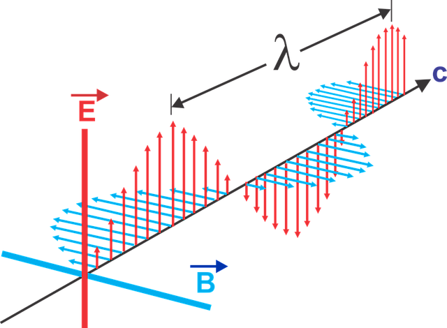

La onde elettromagnetiche
Le onde elettromagnetiche sono una forma di energia che si propagano attraverso lo spazio in modo simile a onde che si propagano sulla superficie di un lago. Le onde elettromagnetiche vengono utilizzate nelle reti di telecomunicazioni per trasmettere informazioni attraverso il trasporto di segnali elettrici o ottici Nelle reti cablate, come le reti LAN o MAN, i segnali vengono trasmessi attraverso cavi in rame o in fibra ottica, mentre nelle reti wireless, come le reti WLAN o WAN, i segnali vengono trasmessi attraverso onde elettromagnetiche. Le onde elettromagnetiche utilizzate nelle reti wireless hanno diverse frequenze e lunghezze d'onda, che determinano le loro caratteristiche e prestazioni. Ad esempio, le onde radio utilizzate nelle reti WLAN e WAN hanno lunghezze d'onda maggiori rispetto alle onde luminose utilizzate nelle reti ottiche, il che significa che hanno una maggiore capacità di attraversare gli ostacoli ma una minore velocità di trasmissione dei dati. Le onde elettromagnetiche possono essere soggette a interferenze, come quelle causate da altri dispositivi wireless, e quindi è importante garantire che le reti siano progettate e gestite in modo da minimizzare le interferenze e garantire un trasporto affidabile dei dati.
